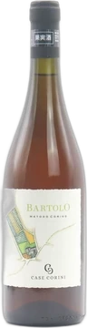

Italy / WHITE WINE
BARTOLO
Case Corini
2025
Tasting Image
Where Cortese and Moscato grapes come together.
- Country
- Italy
- Region
- Piedmont
- Producer
- Case Corini
- Grape
- Cortese / Moscato / Chardonnay
29,000

Italy / WHITE WINE
Case Corini
2025
Tasting Image
